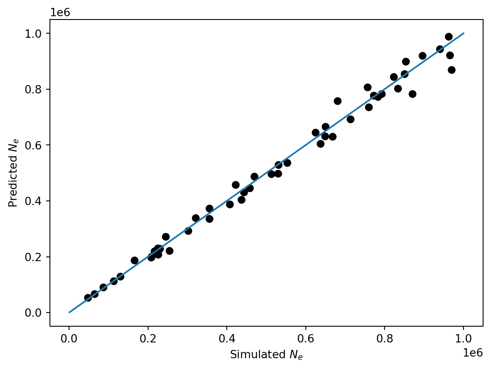

Here’s a quick tutorial on how you might deploy deep learning to solve a popgen problem.
The lab has historically used Tensorflow and Keras, but we’re moving toward PyTorch, so we’ll use that here. A lot of the details overlap, and it’s useful to know both (at least a little).
Define your problem
Make an environment with all your dependencies
Generate your training data
Make a generator to feed your data to your model
Define your model architecture (and loss and optimizer)
Train your model
Evaluate your model
Define your problem
As a simple example, let’s predict long term \(N_e\) from a single diploid individual. We’ll assume we know recombination and mutation rate and that population size is constant. Using a single diploid simplifies the input quite a bit by not having to worry about permutations of rows, sample size, etc. Those may not be things you can avoid thinking about in the problem you’re working on, but for now, let’s keep it simple.
### Make an environment with all your dependencies I’ve made a popgenDL_crashcourse.yml file that you can use to create a conda environment with all the dependencies you need. This is likely as good starting point for most popgenML problems, but easy to imagine other useful libraries you’d want to add.
You can build the environment with
mamba env create -f popgenDL_crashcourse.yml
Here’s what it looks like
cat popgenDL_crashcourse.yml
Get stuff imported and a GPU ready to go.
Next let’s load stuff in and find the least busy GPU.
import msprimeimport numpy as npfrom numpy.random import default_rngimport pandas as pdimport matplotlib.pyplot as pltimport torchimport osimport gpustatimport concurrent.futuresdef get_idle_gpu():""" Utility function which uses the gpustat module to select the least busy GPU that is available and then sets the CUDA_VISIBLE_DEVICES environment variable so that only that GPU is used """try: stats = gpustat.GPUStatCollection.new_query() ids =map(lambda gpu: int(gpu.entry["index"]), stats) ratios =map(lambda gpu: float(gpu.entry["memory.used"])/float(gpu.entry["memory.total"]), stats, ) bestGPU =min(zip(ids, ratios), key=lambda x: x[1])[0]return bestGPUexceptException:pass#this device variable will get used later during trainingdevice = torch.device(f"cuda:{get_idle_gpu()}"if torch.cuda.is_available() else"cpu")print(device)
cuda:2
Generate your training data
As opposed to using emprical data sampled from the real world, we often use simulations to generate training data.
Let’s set up a data class that will store all the details of our simulation and training. It handles doing the simulations and making a data frame that tracks the files that it writes to disk. It will also randomly assign each sim to be training, validation, or test data.
This (or something like it) will help to make sure we aren’t redefining the same parameters in different places, and make our function and method definitions simpler, since we can just pass the data object around rather than individuals parameter values.
The PopGenTraining class is specific to our problem (estimaing Ne), but adopting it for other problems should be straightforward. It’s kinda big, worth the effort for downstream stuff!
from dataclasses import dataclassfrom typing import List@dataclassclass PopGenTraining():""" Dataclass to hold the parameters and methods for the simulation and training :param int seed: random seed :param int N_reps: number of replicates to simulate :param float sequence_length: length of the simulated sequence :param float Ne_scaling: scaling factor for the effective population size :param float recombination_rate: recombination rate :param float mutation_rate: mutation rate :param float Ne_low: lower bound for the effective population size :param float Ne_high: upper bound for the effective population size :param int numsites: number of sites to simulate :param str prefix: prefix for the output files -- full path is encouraged :param List[float] training_fractions: fractions of the data to use for training, validation, and testing """ seed: int N_reps: int sequence_length: float Ne_scaling: float recombination_rate: float mutation_rate: float Ne_low: float Ne_high: float numsites: int prefix: str training_fractions: List[float] n_cpu: int=1def __post_init__(self):ifsum(self.training_fractions) !=1:raiseValueError("training_fractions must sum to 1") training_fraction, validation_fraction, test_fraction =self.training_fractions# list of labels for each simulationself.training_labels = ["training"] *int(training_fraction *self.N_reps) +\ ["validation"] *int(validation_fraction *self.N_reps) +\ ["test"] *int(test_fraction *self.N_reps)iflen(self.training_labels) !=self.N_reps:raiseValueError("wrong number of training labels. Check training_fractions")# seed the random number generatorself.rng = default_rng(self.seed)# seed for each simulationself.seeds =self.rng.integers(0, 2**32, size =self.N_reps)# The population size values to simulate under! self.Ne =self.rng.uniform(self.Ne_low, self.Ne_high, size=self.N_reps )def simulate(self, params_tuple): ne, seed, file_name = params_tuple ts = msprime.sim_ancestry( samples =1, sequence_length =self.sequence_length, recombination_rate =self.recombination_rate, population_size=ne, random_seed=seed ) mts = msprime.sim_mutations( ts, rate =self.mutation_rate, random_seed=seed ) np.save(file=file_name.replace(".npy", ""), arr=mts.tables.sites.position) def generate_training(self): file_names = [f"{self.prefix}_{seed}_pos.npy"for seed inself.seeds] training_dict = {"Ne": self.Ne, "path":file_names, "training_labels":self.training_labels}with concurrent.futures.ProcessPoolExecutor(max_workers=self.n_cpu) as executor: line_out = executor.map(self.simulate, zip(training_dict["Ne"], self.seeds, training_dict["path"]))return pd.DataFrame(training_dict)
#make the sims! path ="/sietch_colab/data_share/popgenDL_crashcourse/sims/sims"# Check whether the specified path exists or notifnot os.path.exists(path): os.makedirs(path)#instantiate! (make an object from the class)popgen_training = PopGenTraining( seed =198, N_reps=500, sequence_length=2e6, Ne_scaling =1e5, recombination_rate=1e-9, mutation_rate =1e-8, Ne_low =1e3, Ne_high=1e6, numsites =int(1e5), prefix = path, training_fractions = [0.8, 0.1, 0.1], n_cpu =25,) #access a member of the dataclassprint(f"N_reps is {popgen_training.N_reps}")#generate the training datapath_df = popgen_training.generate_training()path_df.to_csv("sim_paths.csv", index=False)
N_reps is 500
path_df = pd.read_csv("sim_paths.csv")
path_df.head()
Ne
path
training_labels
0
841352.287106
/sietch_colab/data_share/popgenDL_crashcourse/...
training
1
687189.412917
/sietch_colab/data_share/popgenDL_crashcourse/...
training
2
778880.007331
/sietch_colab/data_share/popgenDL_crashcourse/...
training
3
979745.246506
/sietch_colab/data_share/popgenDL_crashcourse/...
training
4
597455.162151
/sietch_colab/data_share/popgenDL_crashcourse/...
training
Make a generator to feed your data to your model
For pretty much any problem of interest, you won’t be able to hold all your data in memory. Instead, you’ll iteratively feed in random batches of samples.
Turns out batching data like this also has benefits for optimization, but even if it didn’t help, we would still need to use it to deal with the size of our data sets.
PyTorch has a nice DataLoader class that makes this easier, but you still have to tell it how to handle your data by using the __getitem__ method.
So we’re gonna make a second Class that uses our our previous one to generate batches of data.
One very tricky thing to get used to in deep learning is the dimensions of your input. Note here that we use the member numsites to define the number of sites in our simulation. If a simulation had more mutations than numsites it gets truncated, fewer get padded by zeros. Are there better alternatives? Maybe! Try experimenting with alternatives.
from torch.utils.data import Datasetfrom torch.utils.data import DataLoaderimport torch.nn as nnclass PopulationDataset(Dataset):def__init__(self, df, popgen_training: PopGenTraining, training_label ="training"): self.df = df.query(f"training_labels == '{training_label}'")self.popgen_training = popgen_trainingdef__getitem__(self, index): position = torch.tensor(np.load(self.df.iloc[index].path)).to(torch.float32) Ne = torch.tensor(self.df.iloc[index].Ne/self.popgen_training.Ne_scaling).reshape(1) position_array = torch.zeros(self.popgen_training.numsites, dtype=torch.float32) position_array[:len(position)] = position[:self.popgen_training.numsites]/self.popgen_training.sequence_lengthreturn position_array.to(device), Ne.to(device)def__len__(self):returnlen(self.df)
Feed the data loader
Now we have a nice setup to feed in training data. PyTorch’s DataLoader handles the rest, including shuffling and batching.
training_dfs = [PopulationDataset(path_df,popgen_training, training_label = t) for t in ["training", "validation", "test"]]training_loader, validation_loader, test_loader = [DataLoader(dataset=df, batch_size=10, shuffle=True) for df in training_dfs]
Define your model architecture (and loss and optimizer)
Heres we’ll use a MLP (multi-layer perceptron) with a few hidden layers. We’ll use the workhorses of ML for loss and optimization Means Squared Error (MSE) and Stochastic Gradient Descent (SGD).
Train your model
The training loop for PyTorch is longwinded. We could update to PyTorch Lightning, but for now, we’ll be explicit. It’s good to see all the operations that occur, and a nice reminder that neural nets are models with parameters that can be optimized like any other model.
import torch.nn as nnclass Model(nn.Module):def__init__(self, input_size, hidden_size, hidden_count, output_size):super().__init__()self.hidden_count = hidden_countself.layer1 = nn.Linear(input_size, hidden_size)self.layer2 = nn.Linear(hidden_size, hidden_size)self.layer3 = nn.Linear(hidden_size, output_size)def forward(self, x): x =self.layer1(x) x = nn.ReLU()(x)for i inrange(self.hidden_count): x =self.layer2(x) x = nn.ReLU()(x) x =self.layer3(x)return x.to(torch.float64)loss_fn = nn.MSELoss()output_size =1model = Model(popgen_training.numsites, 1000, 4, output_size).to(device)optimizer = torch.optim.SGD(model.parameters(), lr=0.001)for epoch inrange(20):for x_batch, y_batch in training_loader:# 1. Generate predictions pred = model(x_batch)#print(pred)# 2. Calculate loss loss = loss_fn(pred, y_batch)# 3. Compute gradients loss.backward()# 4. Update parameters using gradients optimizer.step()# 5. Reset the gradients to zero optimizer.zero_grad()if epoch %2==0:print(f'Epoch {epoch} Loss {loss.item():.4f}')
Epoch 0 Loss 0.3823
Epoch 2 Loss 0.1863
Epoch 4 Loss 0.0580
Epoch 6 Loss 0.0840
Epoch 8 Loss 0.0409
Epoch 10 Loss 0.1573
Epoch 12 Loss 0.1474
Epoch 14 Loss 0.0535
Epoch 16 Loss 0.3484
Epoch 18 Loss 0.0359
Evaluate your model
Note that training_dfs[2] is the test data. So the model has not seen these examples before.
fig, ax = plt.subplots()for x_batch, y_batch in training_dfs[2]: pred = model(x_batch) ax.scatter(popgen_training.Ne_scaling*y_batch.item(), popgen_training.Ne_scaling*pred.item(), color ='black')one_one = np.linspace(popgen_training.Ne_low, popgen_training.Ne_high, 100)ax.plot(one_one, one_one)ax.set_xlabel("Simulated $N_e$")ax.set_ylabel("Predicted $N_e$")plt.show()

Postscript
So that went pretty well. This is pretty bare bones, but hopefully it gives you a sense of how you might approach a popgen problem with deep learning.
Here’s somethign you might try to edit in the above to gain more familiarity with the process.
Try other architectures, loss functions, and optimizers.
Modify hyperparameters. What is numsites and what happens if you change it?
How else could we monitor training progress? Did we use the validation data?
Answer: No we did not, but how can we incorporate it?